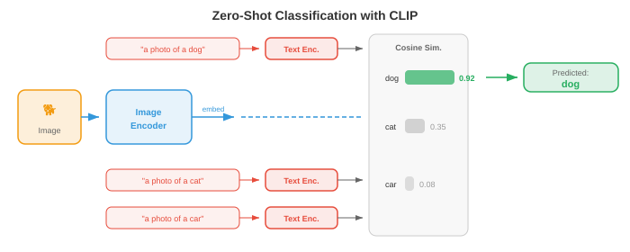

Multimodal Representations¶
Multimodal representations bridge vision, language, and audio into shared embedding spaces. This file covers fusion strategies, CLIP, ALIGN, SigLIP, contrastive loss functions (InfoNCE, NT-Xent), zero-shot classification, and retrieval evaluation.
-
Imagine you are sitting in a cafe. You see a steaming cup on the table, hear the clinking of ceramic, smell roasted coffee beans, and feel warmth radiating from the mug. No single sense tells you everything: your brain fuses these signals into a unified percept of "hot coffee." Multimodal learning does the same thing for machines: it combines information from multiple modalities (vision, language, audio, and others) to build richer, more robust representations than any single modality provides alone.
-
A modality is a distinct channel of information. In machine learning, the most common modalities are images (pixel grids), text (token sequences), audio (waveforms or spectrograms, as in Chapter 9), video (sequences of frames), and structured data (tables, graphs). Each modality has its own statistical structure: images are spatially coherent, text is sequential and discrete, audio is temporal and continuous. The challenge of multimodal learning is bridging these fundamentally different data types.
-
Why bother combining modalities? Because they provide complementary information. A photograph of a dog tells you about its breed and colour but not its name. A caption like "my golden retriever Max" tells you the name and breed but not the exact pose. Together, the image and text give a fuller picture than either alone. This complementarity is the core motivation: multimodal models can answer questions, generate content, and make decisions that no unimodal model can.

Fusion Strategies¶
-
Think of a group project. You can combine ideas in two ways: everyone works together in the same room from the start (sharing raw notes and drafts), or each person writes their section independently and you merge the final documents. These correspond to early fusion and late fusion in multimodal learning.
-
Early fusion (also called feature-level fusion) concatenates or mixes raw or low-level features from different modalities before any serious processing happens. For example, you might concatenate an image's pixel features with a text's token embeddings and feed the combined sequence into a single transformer. The model can learn fine-grained cross-modal interactions from the start, but the input space is large and the model must learn to handle very different data types simultaneously.
-
Formally, given feature vectors \(x_{\text{img}} \in \mathbb{R}^{d_1}\) and \(x_{\text{txt}} \in \mathbb{R}^{d_2}\) from two modalities, early fusion simply concatenates them:
-
This concatenated vector is then processed by a shared network. The advantage is that the model can discover cross-modal correlations at every layer. The disadvantage is computational cost and the difficulty of aligning very different feature types (dense pixel values vs. sparse token indices).
-
Late fusion (also called decision-level fusion) processes each modality independently through its own encoder, producing a high-level representation or even a final prediction for each. These outputs are then combined, typically by averaging scores, voting, or a learned combination layer. Late fusion is simpler and lets you reuse pre-trained unimodal models off the shelf, but it cannot capture low-level cross-modal interactions because the modalities never "see" each other's raw features.
-
Given modality-specific predictions \(\hat{y}_1\) and \(\hat{y}_2\), a simple late fusion rule is:
-
where \(\alpha \in [0, 1]\) is a learned or hand-tuned mixing weight.
-
Middle fusion (also called intermediate fusion) is the pragmatic middle ground used by most modern systems. Each modality is first processed by its own encoder (extracting modality-specific features), and then the encoded representations are combined partway through the network, often via cross-attention layers. This lets each encoder specialise in its modality while still enabling rich cross-modal interactions. Flamingo, LLaVA, and most vision-language models (file 02) use middle fusion.

- The choice between fusion strategies depends on data availability, computational budget, and the task. Early fusion is powerful but data-hungry. Late fusion is cheap but limited. Middle fusion with cross-attention has become the dominant approach in large-scale multimodal models because it balances expressiveness with modularity.
Joint Embedding Spaces¶
-
Imagine a universal translator that can take any sentence in any language and map it to the same point in a shared "meaning space." The sentence "a dog on a beach" in English, French, or Japanese would all land at the same coordinate. Joint embedding spaces do exactly this, but across modalities: an image of a dog on a beach and the text "a dog on a beach" should map to nearby points in the same vector space.
-
Formally, we learn two encoder functions: \(f_\theta : \mathcal{X}_1 \to \mathbb{R}^d\) for modality 1 (e.g., images) and \(g_\phi : \mathcal{X}_2 \to \mathbb{R}^d\) for modality 2 (e.g., text). Both map their inputs into the same \(d\)-dimensional space. The training objective ensures that semantically matched pairs \((x_1, x_2)\) have embeddings \(f_\theta(x_1)\) and \(g_\phi(x_2)\) that are close (high cosine similarity), while unmatched pairs are far apart.
-
This is a direct generalisation of the word embedding spaces from Chapter 7. Recall that Word2Vec and GloVe placed semantically similar words near each other in a vector space. Joint embedding spaces extend this idea across modalities: instead of word-to-word similarity, we measure image-to-text similarity, audio-to-text similarity, or even image-to-audio similarity.
-
The similarity metric is almost always cosine similarity (Chapter 1):
- By \(L_2\)-normalising all embeddings onto the unit hypersphere, cosine similarity reduces to a simple dot product \(u \cdot v\), which is extremely efficient to compute and can be accelerated with approximate nearest-neighbour libraries.

- The power of a joint embedding space is that it enables zero-shot transfer. Once you have aligned image and text embeddings, you can classify images into categories you have never trained on: just embed the category names as text and find which text embedding is closest to the image embedding. No task-specific fine-tuning is needed. This is the key insight behind CLIP and its successors.
Contrastive Learning for Multimodal Alignment¶
-
Think of a classroom exercise where students are given shuffled pairs of photos and captions, and asked to match each photo with its correct caption. To do this well, you need to understand both the visual content and the language, and know how they relate. Contrastive learning trains models in exactly this way: given a batch of (image, text) pairs, the model must figure out which image goes with which text.
-
As we saw in Chapter 8 (file 04), contrastive learning in the unimodal setting (SimCLR, MoCo) pulls together augmented views of the same image and pushes apart views of different images. Multimodal contrastive learning replaces "augmented views" with "matched modalities": an image and its caption are the positive pair; the image paired with any other caption in the batch is a negative pair.
CLIP¶
-
CLIP (Contrastive Language-Image Pre-training, Radford et al., 2021) is the foundational model for multimodal contrastive learning. It trains an image encoder (a ViT or ResNet, Chapter 8) and a text encoder (a transformer, Chapter 7) jointly on 400 million (image, text) pairs scraped from the internet.
-
Given a batch of \(N\) image-text pairs, CLIP computes the \(N \times N\) matrix of cosine similarities between all image embeddings and all text embeddings. The diagonal entries are the matched pairs (positives); all off-diagonal entries are unmatched (negatives). The training loss pushes diagonal entries high and off-diagonal entries low.
-
The loss is a symmetric cross-entropy. For image \(i\) paired with text \(j = i\), the image-to-text loss is:
- and the text-to-image loss is the same with the roles swapped:
- The total CLIP loss is the average:
- Here \(\tau\) is a learned temperature parameter (initialised at \(\tau = 0.07\)). Temperature controls the sharpness of the softmax distribution: low \(\tau\) makes the model focus harder on the closest match, high \(\tau\) spreads probability more evenly. CLIP learns \(\tau\) jointly with the model weights rather than treating it as a fixed hyperparameter.

-
CLIP's image encoder is typically a ViT-L/14 (a large Vision Transformer with 14x14 patches, Chapter 8 file 04). The text encoder is a 12-layer transformer with causal masking (like GPT, Chapter 7 file 04). Both encoders project their outputs to a shared 512- or 768-dimensional space via a learned linear projection, followed by \(L_2\) normalisation.
-
CLIP's most remarkable property is zero-shot image classification. To classify an image into one of \(K\) categories, you create \(K\) text prompts like "a photo of a {class name}", embed each prompt with the text encoder, embed the image with the image encoder, and pick the class whose text embedding has the highest cosine similarity with the image embedding. On ImageNet, CLIP achieves competitive accuracy without ever seeing a single ImageNet training example.
ALIGN¶
- ALIGN (Jia et al., 2021) scales CLIP's approach to a noisier, larger dataset: 1.8 billion image-text pairs with minimal filtering. Where CLIP carefully curated its data, ALIGN shows that scale can compensate for noise. ALIGN uses an EfficientNet image encoder and a BERT text encoder, and trains with the same contrastive loss. The key finding is that with enough data, you do not need expensive data cleaning: the contrastive objective naturally downweights noisy pairs because they produce inconsistent gradients.
SigLIP¶
-
SigLIP (Sigmoid Loss for Language-Image Pre-training, Zhai et al., 2023) replaces CLIP's softmax-based contrastive loss with a simpler sigmoid loss. Instead of treating the \(N \times N\) similarity matrix as a classification problem (each row is a softmax over columns), SigLIP treats each entry independently as a binary classification: is this (image, text) pair matched or not?
-
The SigLIP loss for a single pair \((i, j)\) is:
-
where \(y_{ij} = 1\) if \(i = j\) (matched) and \(y_{ij} = 0\) otherwise, and \(\sigma\) is the sigmoid function.
-
The crucial advantage of SigLIP is that it eliminates the need for a global softmax normalisation across the entire batch. In CLIP, the softmax denominator requires gathering all embeddings across all devices, which is a communication bottleneck in distributed training. SigLIP's per-pair sigmoid loss can be computed locally, enabling more efficient scaling to very large batches. SigLIP matches CLIP's quality with lower training cost.
Contrastive Loss Functions in Detail¶
- The loss functions used in contrastive learning share a common structure: they all try to make the similarity score of positive pairs higher than that of negative pairs, with some notion of "margin" or "temperature" controlling how hard the model pushes. Let us formalise the key variants.
InfoNCE¶
- InfoNCE (Noise-Contrastive Estimation, van den Oord et al., 2018) is the theoretical foundation behind CLIP's loss. Given a query \(q\), one positive key \(k^+\), and \(K\) negative keys \(\{k_1^-, \ldots, k_K^-\}\), the loss is:
- This is a \((K+1)\)-way classification problem: identify the positive among \(K+1\) candidates. InfoNCE is a lower bound on the mutual information between the query and the positive key, which is why maximising it aligns representations of semantically matched inputs. The bound tightens as the number of negatives \(K\) increases, which explains why contrastive methods benefit from large batch sizes.
NT-Xent¶
- NT-Xent (Normalised Temperature-scaled Cross-Entropy, Chen et al., 2020) is the loss used in SimCLR (Chapter 8 file 04) and is essentially InfoNCE applied symmetrically within a batch. For a batch of \(N\) pairs, the \(2N\) augmented views produce \(2N - 2\) negatives for each anchor (all views except itself and its positive). The loss for a positive pair \((i, j)\) is:
- NT-Xent and InfoNCE are the same mathematical formula; the names differ because they were introduced in different contexts (self-supervised vision vs. representation learning theory).
The Role of Temperature¶
-
The temperature \(\tau\) is one of the most important hyperparameters in contrastive learning. To build intuition, think of temperature in the physical sense: at high temperature, molecules move randomly (the softmax is flat, all negatives look equally bad); at low temperature, molecules settle into rigid structures (the softmax is peaked, only the hardest negatives matter).
-
Formally, as \(\tau \to 0\), the softmax approaches a hard argmax that selects only the single hardest negative. As \(\tau \to \infty\), all negatives contribute equally. In practice, \(\tau \in [0.01, 0.1]\) works well for normalised embeddings. Too-low temperature causes training instability (gradients become very large for hard negatives); too-high temperature makes the loss insensitive to violations.
-
CLIP initialises \(\tau = 0.07\) and learns it as a log-parametrised scalar \(\tau = \exp(t)\), where \(t\) is updated by gradient descent alongside the model weights. This allows the model to automatically adjust the difficulty of the contrastive task during training.

Triplet Loss and Margin-Based Alternatives¶
- Before InfoNCE dominated, triplet loss was the standard for metric learning. Given an anchor \(a\), a positive \(p\), and a negative \(n\):
-
where \(m\) is a margin that ensures the positive is at least \(m\) closer than the negative. Triplet loss operates on individual triplets rather than batches, making it less sample-efficient than InfoNCE. It is also sensitive to the mining strategy: random negatives are often too easy (the loss is zero), so hard negative mining (selecting the closest incorrect match) or semi-hard mining (selecting negatives within the margin) is critical.
-
InfoNCE implicitly performs hard negative mining across the entire batch, which is one reason it outperforms triplet loss at scale. The softmax normalisation in InfoNCE automatically upweights hard negatives (those with high similarity to the anchor), providing a natural curriculum without explicit mining.
Image-Text Retrieval and Zero-Shot Classification¶
-
Once you have a trained joint embedding space, you can perform image-text retrieval: given an image query, find the most relevant texts from a database (image-to-text retrieval), or given a text query, find the most relevant images (text-to-image retrieval). This is simply a nearest-neighbour search in the shared embedding space.
-
Imagine a librarian who can instantly compare any photograph with any caption in a million-item catalogue. They do not need to understand every possible category in advance; they just measure how "close" each photo is to each caption. This is how CLIP-style models perform retrieval and zero-shot classification.
-
Zero-shot classification is a special case of text-to-image retrieval. Given \(K\) class names, you construct text prompts \(\{t_1, \ldots, t_K\}\) (e.g., "a photo of a cat", "a photo of a dog") and embed them. For a new image \(x\), the predicted class is:
-
The key insight is that the text encoder acts as a flexible classifier head. Instead of training a new linear layer for each downstream task, you simply describe the task in natural language. This is why CLIP generalises so well: the text encoder has seen millions of diverse descriptions during pre-training.
-
Prompt engineering matters. CLIP's zero-shot accuracy on ImageNet improves from 63.2% to 68.4% just by changing the prompt template from "{class name}" to "a photo of a {class name}." Even better, prompt ensembling averages the text embeddings of multiple templates (e.g., "a photo of a {class name}", "a good photo of a {class name}", "a drawing of a {class name}") to produce a more robust text representation.

Audio-Visual Correspondence¶
-
Close your eyes and listen to someone bouncing a basketball. You can tell when it hits the floor from the rhythmic thuds. Now open your eyes: the visual bounce aligns perfectly with each thud. This tight correspondence between audio and visual events is a free supervisory signal that machines can learn from. Audio-visual correspondence learning trains models to associate sounds with their visual sources without any human labels.
-
The idea is strikingly similar to CLIP, but replaces text with audio. Given paired video frames and audio segments, the model learns an embedding space where temporally aligned audio-visual pairs are close and misaligned pairs are far apart.
-
Audio-Visual Embedding (AVE) methods (Arandjelovic and Zisserman, 2017) train a visual encoder \(f\) and an audio encoder \(g\) with a contrastive loss on video data. The positive pair is (video frame, audio clip from the same time), and negatives are audio clips from different videos or different times. The model learns that a barking sound goes with the image of a dog, and a guitar sound goes with the image of a guitar, all without labels.
-
The audio encoder typically processes log-mel spectrograms (Chapter 9 file 01) using a CNN or audio transformer, producing a fixed-size embedding. The visual encoder processes video frames using a standard image backbone (ResNet, ViT). Both project to a shared \(d\)-dimensional space, and training uses the same InfoNCE loss as CLIP:

-
Applications of audio-visual learning include: sound source localisation (where in the image is the sound coming from?), audio-visual speech recognition (combining lip movements with audio, as in Chapter 9 file 02), audio-visual source separation (isolating one speaker's voice by watching their face, the "cocktail party" problem from Chapter 9 file 05), and video generation conditioned on audio.
-
ImageBind (Girdhar et al., 2023) extends this to six modalities: images, text, audio, depth, thermal, and IMU data. The key insight is that you do not need paired data for every combination. By aligning each modality to images (using image-text pairs for text, image-audio pairs for audio, etc.), all modalities become implicitly aligned through the shared image embedding space. This "binding" through a common anchor modality produces an emergent alignment: audio and text become similar even though they were never directly trained together.
Evaluation¶
- Evaluating multimodal models requires metrics that capture cross-modal understanding. The two dominant evaluation paradigms are zero-shot benchmarks and retrieval metrics.
Zero-Shot Benchmarks¶
-
Zero-shot evaluation measures whether a model can perform tasks it was never explicitly trained for. The most common benchmark is ImageNet zero-shot accuracy: embed all 1,000 ImageNet class names as text, embed each test image, and measure top-1 and top-5 classification accuracy based on cosine similarity. CLIP ViT-L/14 achieves 75.5% top-1 accuracy zero-shot, comparable to a supervised ResNet-50 trained on ImageNet.
-
Other zero-shot benchmarks include: CIFAR-10/100, STL-10, Food-101, Oxford Pets, and Flowers-102. Evaluating across many datasets tests whether the model has genuinely general visual understanding or has merely memorised patterns from its pre-training data.
-
Linear probe evaluation is a complementary test. You freeze the pre-trained image encoder, extract features for a labelled dataset, and train a simple linear classifier on top. This measures the quality of the learned representations independently of the zero-shot retrieval mechanism. CLIP's features are excellent linear probe features, often matching or exceeding supervised pre-training.
Retrieval Metrics¶
-
For retrieval tasks (image-to-text and text-to-image), the standard metric is Recall@K (R@K): the fraction of queries for which the correct match appears in the top \(K\) retrieved results. Common values are R@1, R@5, and R@10.
-
Formally, for a set of \(Q\) queries:
-
where \(\text{rank}(q)\) is the position of the correct match in the ranked retrieval list for query \(q\).
-
Standard retrieval benchmarks include Flickr30K (31,000 images, each with 5 captions) and MS-COCO (123,000 images, each with 5 captions). Evaluation is done on the test split: given an image, retrieve the correct caption(s) from the full test set, and vice versa.
-
Median rank (MedR) is a complementary metric: the median position of the correct match across all queries. A perfect model has MedR = 1. Lower is better.
-
Beyond retrieval, multimodal models are also evaluated on compositional understanding benchmarks like Winoground (which tests whether the model can distinguish "a mug in a dog" from "a dog in a mug") and ARO (Attribute, Relation, Order), which test whether the model genuinely understands the structure of language or merely matches bags of words. CLIP-style models often struggle on these, revealing a fundamental limitation: contrastive pre-training aligns global semantics but may not capture fine-grained compositional structure.

Putting It All Together¶
-
The multimodal representations covered in this file form the foundation for everything that follows in this chapter. The joint embedding spaces trained by CLIP and its successors are the "glue" that connects vision and language. File 02 builds on this foundation with vision-language models that go beyond retrieval to generate text about images. File 03 explores how images and video are tokenised for use in sequence models. File 04 covers cross-modal generation (text-to-image, text-to-video). And file 05 examines unified architectures that handle multiple modalities within a single model.
-
The core takeaway: contrastive learning on paired data produces embedding spaces where different modalities are interchangeable. An image embedding and a text embedding become "the same kind of thing," enabling zero-shot classification, retrieval, and seamless integration into larger systems. The simplicity of this idea, just push matched pairs together and unmatched pairs apart, belies its extraordinary effectiveness.
Coding Tasks (use CoLab or notebook)¶
-
Implement the CLIP contrastive loss from scratch. Create random image and text embeddings, compute the similarity matrix, and calculate the symmetric cross-entropy loss.
import jax import jax.numpy as jnp import matplotlib.pyplot as plt def clip_loss(image_embeds, text_embeds, temperature=0.07): """Compute symmetric CLIP contrastive loss.""" # L2 normalise embeddings image_embeds = image_embeds / jnp.linalg.norm(image_embeds, axis=1, keepdims=True) text_embeds = text_embeds / jnp.linalg.norm(text_embeds, axis=1, keepdims=True) # Compute cosine similarity matrix (N x N) logits = image_embeds @ text_embeds.T / temperature # (N, N) # Labels: the diagonal (i-th image matches i-th text) N = logits.shape[0] labels = jnp.arange(N) # Symmetric cross-entropy: image-to-text + text-to-image loss_i2t = -jnp.mean(jax.nn.log_softmax(logits, axis=1)[jnp.arange(N), labels]) loss_t2i = -jnp.mean(jax.nn.log_softmax(logits, axis=0)[labels, jnp.arange(N)]) return (loss_i2t + loss_t2i) / 2, logits * temperature # Simulate a batch of 8 image-text pairs in 64-dim space key = jax.random.PRNGKey(42) k1, k2 = jax.random.split(key) N, D = 8, 64 image_embeds = jax.random.normal(k1, (N, D)) text_embeds = jax.random.normal(k2, (N, D)) loss, sim_matrix = clip_loss(image_embeds, text_embeds) print(f"CLIP loss (random embeddings): {loss:.4f}") # Visualise the similarity matrix fig, ax = plt.subplots(figsize=(6, 5)) im = ax.imshow(sim_matrix, cmap='coolwarm', vmin=-1, vmax=1) ax.set_xlabel("Text index"); ax.set_ylabel("Image index") ax.set_title(f"Cosine Similarity Matrix (loss={loss:.3f})") plt.colorbar(im); plt.tight_layout(); plt.show() # Try changing temperature (0.01, 0.1, 1.0) and observe how loss changes # Try making matched pairs similar: set text_embeds = image_embeds + small noise -
Build a toy joint embedding model that learns to align 2D "images" (random vectors) with "captions" (different random vectors) using InfoNCE loss and gradient descent.
import jax import jax.numpy as jnp import matplotlib.pyplot as plt def info_nce_loss(img_enc, txt_enc, img_data, txt_data, tau=0.1): """InfoNCE over a batch of paired (image, text) data.""" z_img = img_data @ img_enc # (N, D) z_txt = txt_data @ txt_enc # (N, D) # L2 normalise z_img = z_img / jnp.linalg.norm(z_img, axis=1, keepdims=True) z_txt = z_txt / jnp.linalg.norm(z_txt, axis=1, keepdims=True) logits = z_img @ z_txt.T / tau labels = jnp.arange(logits.shape[0]) return -jnp.mean(jax.nn.log_softmax(logits, axis=1)[jnp.arange(len(labels)), labels]) # Create 32 paired samples: img in R^8, txt in R^6, embed into R^4 key = jax.random.PRNGKey(0) k1, k2, k3, k4 = jax.random.split(key, 4) N, d_img, d_txt, d_embed = 32, 8, 6, 4 img_data = jax.random.normal(k1, (N, d_img)) txt_data = jax.random.normal(k2, (N, d_txt)) # Learnable projection matrices img_enc = jax.random.normal(k3, (d_img, d_embed)) * 0.1 txt_enc = jax.random.normal(k4, (d_txt, d_embed)) * 0.1 grad_fn = jax.jit(jax.grad(info_nce_loss, argnums=(0, 1))) lr = 0.05 losses = [] for step in range(300): loss = info_nce_loss(img_enc, txt_enc, img_data, txt_data) losses.append(float(loss)) g_img, g_txt = grad_fn(img_enc, txt_enc, img_data, txt_data) img_enc = img_enc - lr * g_img txt_enc = txt_enc - lr * g_txt print(f"Initial loss: {losses[0]:.3f}, Final loss: {losses[-1]:.3f}") print(f"Random baseline (log N): {jnp.log(N):.3f}") plt.figure(figsize=(8, 4)) plt.plot(losses, color='#2c3e50') plt.axhline(y=0, color='green', linestyle='--', alpha=0.5, label='Perfect alignment') plt.axhline(y=float(jnp.log(N)), color='red', linestyle='--', alpha=0.5, label='Random (log N)') plt.xlabel("Step"); plt.ylabel("InfoNCE Loss") plt.title("Learning a Joint Embedding Space") plt.legend(); plt.grid(alpha=0.3); plt.tight_layout(); plt.show() # Modify d_embed (try 2, 4, 16) to see how embedding dimension affects alignment -
Implement zero-shot classification with pre-computed embeddings. Simulate class "prototypes" as text embeddings and classify new images by nearest-neighbour lookup.
import jax import jax.numpy as jnp import matplotlib.pyplot as plt # Simulate 5 classes, each with a prototype text embedding in R^32 key = jax.random.PRNGKey(42) n_classes, d = 5, 32 class_names = ["cat", "dog", "car", "plane", "ship"] # Class prototypes (imagine these came from a text encoder) k1, k2 = jax.random.split(key) class_prototypes = jax.random.normal(k1, (n_classes, d)) class_prototypes = class_prototypes / jnp.linalg.norm(class_prototypes, axis=1, keepdims=True) # Generate 200 test "images" (embeddings near their class prototype + noise) n_per_class = 40 true_labels = jnp.repeat(jnp.arange(n_classes), n_per_class) keys = jax.random.split(k2, n_classes * n_per_class) image_embeds = [] for i in range(n_classes): noise = jax.random.normal(keys[i], (n_per_class, d)) * 0.5 cluster = class_prototypes[i] + noise image_embeds.append(cluster) image_embeds = jnp.concatenate(image_embeds, axis=0) image_embeds = image_embeds / jnp.linalg.norm(image_embeds, axis=1, keepdims=True) # Zero-shot classification: cosine similarity with each prototype similarities = image_embeds @ class_prototypes.T # (200, 5) predicted_labels = jnp.argmax(similarities, axis=1) accuracy = jnp.mean(predicted_labels == true_labels) print(f"Zero-shot accuracy: {accuracy:.1%}") # Confusion matrix conf = jnp.zeros((n_classes, n_classes), dtype=jnp.int32) for true, pred in zip(true_labels, predicted_labels): conf = conf.at[true, pred].add(1) fig, ax = plt.subplots(figsize=(6, 5)) im = ax.imshow(conf, cmap='Blues') ax.set_xticks(range(n_classes)); ax.set_xticklabels(class_names, rotation=45) ax.set_yticks(range(n_classes)); ax.set_yticklabels(class_names) ax.set_xlabel("Predicted"); ax.set_ylabel("True") for i in range(n_classes): for j in range(n_classes): ax.text(j, i, int(conf[i, j]), ha='center', va='center', fontsize=11) ax.set_title(f"Zero-Shot Confusion Matrix (acc={accuracy:.1%})") plt.colorbar(im); plt.tight_layout(); plt.show() # Try increasing noise (0.5 -> 1.0 -> 2.0) to see accuracy degrade # Try adding prompt ensembling: average 3 noisy copies of each prototype